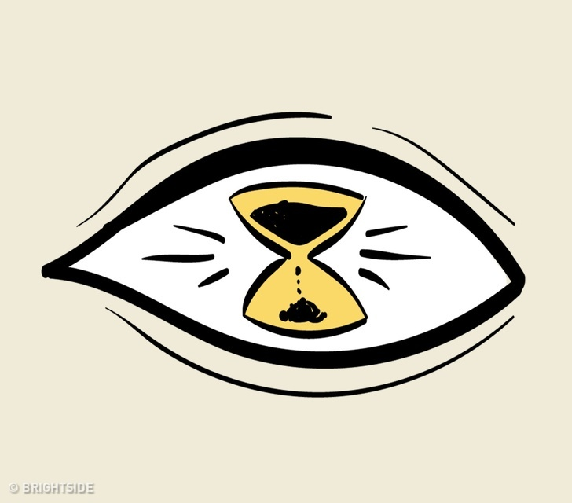

你善於觀察和分析細節，會通過檢測文字和圖像去理解周遭的世界。
就像是每句話都是一個拼圖，你要一片一片地將其分解，因為這是從中獲得真實含意的唯一方法。
這不是很多人都能做到的，你思考和分析的程度超出別人很多。
這樣子，你可以得到事物較深層的意義。
你很容易迷失自己的思緒，這會使你的感知變得模糊。
你並不總是能辨別什麼是正確或錯誤的，但你不想對外界展示自己對事情的不確定，而是認為自己是一個非常自信的人。
你把生活視為一個複雜的拼圖，然後嘗試去找出每一片應該在的位置。
你可能永遠無法把每件事的含意都理解，但你覺得這樣的你已經可以了。